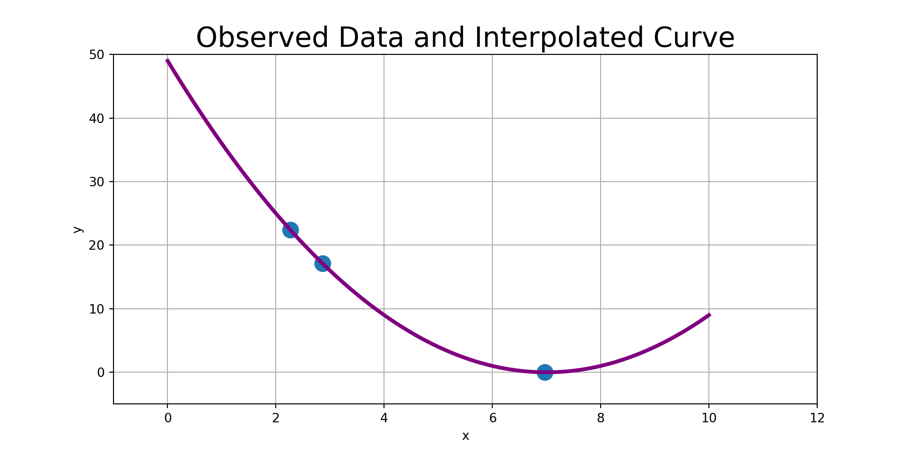
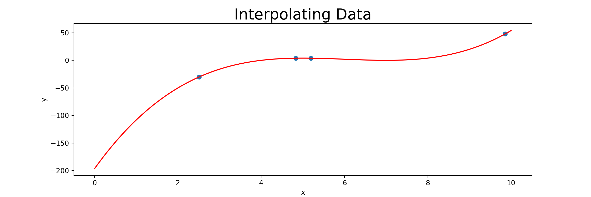
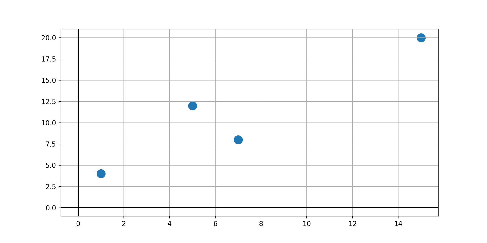
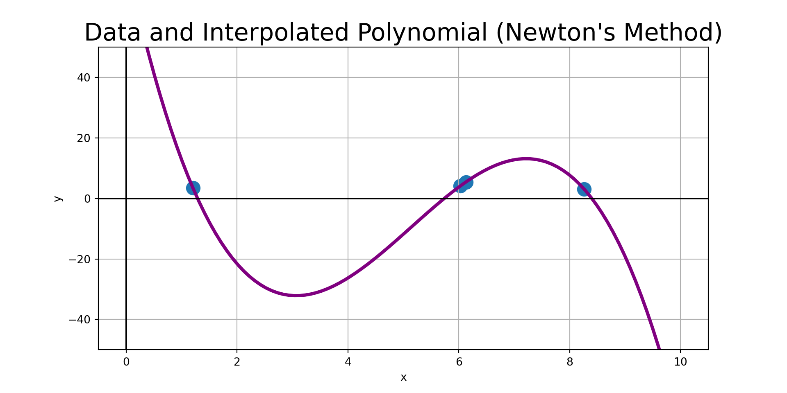
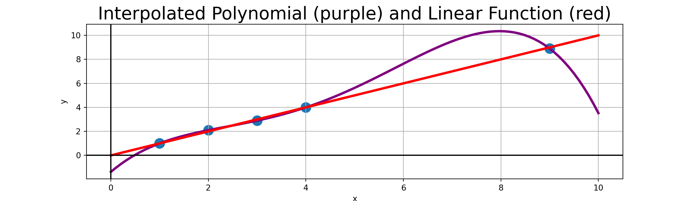
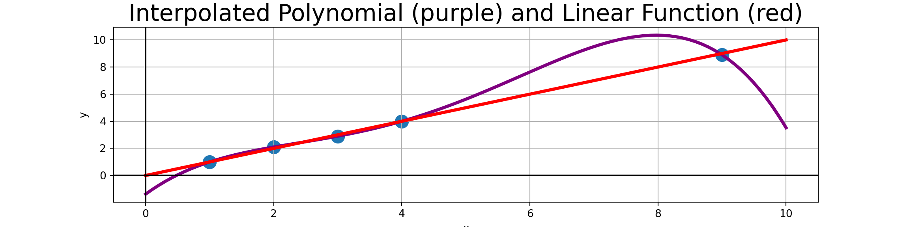

MAT 370: Row Pivoting
December 29, 2025
Motivation and Context
We’re nearly always working with incomplete data, trying to fill in the gaps or to make predictions to aid in decision-making.
Such a process is called interpolation. The video below will provide a bit more real-world context before we jump in.
▶ Video from GIS Resources.
Interpolation and Curve-Fitting
Through this next section of our course, we’ll consider fitting models to observed data.
There are two umbrella processes for achieving this objective – interpolation or curve fitting.
Interpolation assumes a deterministic relationship with observed data assumed to be measured exactly.

Curve-fitting is a process that acknowledges noise and uncertainty and seeks to capture a general trend between available independent features and a dependent response.

Polynomial Interpolation
We’ve seen that interpolation means fitting curves through existing data points.
That is, our observed data points will fall exactly on the curve(s) we are constructing.
It is always possible to construct a unique polynomial of degree at most \(n-1\) that passes through \(n\) distinct data points having distinct “\(x\)” coordinates.

A Strategy and an Example
As usual, we’ll find it helpful to have an example to work with while we introduce and discuss the methods for polynomial interpolation below.
\[P_{n}\left(x\right) = \sum_{i = 0}^{n}{y_i\ell_{i}\left(x\right)}\]
where \(n\) is the degree of the polynomial and
\[\begin{align*} \ell_{i}\left(x\right) &= \left(\frac{x - x_0}{x_i - x_0}\right)\left(\frac{x - x_1}{x_i - x_1}\right)\cdots \left(\frac{x - x_{i-1}}{x_i - x_{i-1}}\right)\left(\frac{x - x_{i+1}}{x_i - x_{i+1}}\right)\cdots \left(\frac{x - x_n}{x_i - x_n}\right)\\ &= \prod_{\substack{j=0\\ j\neq i}}^{n}{\frac{x - x_{j}}{x_i - x_j}}~~\text{for}~~i = 0, 1, \cdots, n \end{align*}\]
The \(\ell_{i}\left(x\right)\) functions are called the cardinal functions.
Note that if \(n = 1\) (two points), we have a linear function:
\[P_1\left(x\right) = y_0\left(\frac{x - x_1}{x_0 - x_1}\right) + y_1\left(\frac{x - x_0}{x_1 - x_0}\right)\]
Example: Construct a degree-three polynomial interpolant for the observed data
| x | y |
|---|---|
| 1 | 4 |
| 5 | 12 |
| 7 | 8 |
| 15 | 20 |

Completing the Example
Example: Use Lagrange’s Method to find a third degree polynomial interpolant through the observed data points \(\left(1, 4\right)\), \(\left(5, 12\right)\), \(\left(7, 8\right)\), and \(\left(15, 20\right)\).
As a reminder, the Lagrange polynomial consists of sums of terms of the form
\[y_i\prod_{\substack{j = 0\\ j\neq i}}^{n}\left(\frac{x - x_i}{x_i - x_j}\right)\]
def f(x):
term1 = 4*((x - 5)*(x - 7)*(x - 15))/((1 - 5)*(1 - 7)*(1 - 15))
term2 = ___*((x - ___)*(x - ___)*(x - ___))/((___ - ___)*(___ - ___)*(___ - ___))
term3 = ___*((x - ___)*(x - ___)*(x - ___))/((___ - ___)*(___ - ___)*(___ - ___))
term4 = ___*((x - ___)*(x - ___)*(x - ___))/((___ - ___)*(___ - ___)*(___ - ___))
return term1 + term2 + term3 + term4Completing the Example
Example: Use Lagrange’s Method to find a third degree polynomial interpolant through the observed data points \(\left(1, 4\right)\), \(\left(5, 12\right)\), \(\left(7, 8\right)\), and \(\left(15, 20\right)\).
As a reminder, the Lagrange polynomial consists of sums of terms of the form
\[y_i\prod_{\substack{j = 0\\ j\neq i}}^{n}\left(\frac{x - x_i}{x_i - x_j}\right)\]
Approximation Error
The function we are attempting to approximate may not actually be a polynomial.
In these cases, we’ll have approximation error because the functional form is incorrect.
It can be shown that the error in using a polynomial interpolant \(P_n\left(x\right)\) as an approximation for the true function \(f\left(x\right)\) is bounded by
\[f\left(x\right) - P_{n}\left(x\right) = \frac{\left(x - x_0\right)\left(x - x_1\right)\cdots \left(x - x_n\right)}{\left(n+1\right)!}f^{\left(n+1\right)}\left(\xi\right)\]
where \(f^{\left(n+1\right)}\) is the \(n^{th}\) derivative of the true function \(f\left(x\right)\) and \(\xi\) is somewhere in the interval \(I = \left(x_0, x_n\right)\).
While Lagrange’s method is relatively easy to understand, it is algorithmically inefficient.
We’ll explore Newton’s Method as an alternative next.
Newton’s Method
Newton’s method for polynomial interpolation is to construct a polynomial of the form
\[P_{n}\left(x\right) = a_0 + \left(x - x_0\right)a_1 + \left(x - x_0\right)\left(x - x_1\right)a_2 + \cdots + \left(x - x_0\right)\left(x - x_1\right)\cdots\left(x - x_{n-1}\right)a_n\]
For example, a degree three polynomial (an interpolant on four data points) is given by
\[\begin{align*} P_{3}\left(x\right) &= a_0 + \left(x - x_0\right)a_1 + \left(x - x_0\right)\left(x - x_1\right)a_2 + \left(x - x_0\right)\left(x - x_1\right)\left(x - x_2\right)a_3\\ &= a_0 + \left(x - x_0\right)\left(a_1 + \left(x - x_1\right)a_2 + \left(x - x_1\right)\left(x - x_2\right)a_3\right)\\ &= a_0 + \left(x - x_0\right)\left(a_1 + \left(x - x_1\right)\left(a_2 + \left(x - x_2\right)a_3\right)\right) \end{align*}\]
which can be evaluated backwards using the following recurrence:
\[\begin{align*} P_0\left(x\right) &= a_3\\ P_1\left(x\right) &= a_2 + \left(x - x_2\right)P_0\left(x\right)\\ P_2\left(x\right) &= a_1 + \left(x - x_1\right)P_1\left(x\right)\\ P_3\left(x\right) &= a_0 + \left(x - x_0\right)P_2\left(x\right) \end{align*}\]
This doesn’t just work nicely for \(n = 3\) – we have the following recurrence for any \(n\).
\[\begin{align*} P_0\left(x\right) &= a_n\\ p_k\left(x\right) & = a_{n - k} + \left(x - x_{n - k}\right)P_{k - 1}\left(x\right)~~\text{for}~~ k \in [n] \end{align*}\]
Now that we have this evaluation strategy, we can write a routine to evaluate such a polynomial!
p = a[n]
for k in range(1, n + 1):
p = a[n - k] + (x - xData[n - k])*pFinding Coefficients
If you’re being observant, you’ve noticed that we don’t yet know how to determine the coefficients \(a_0,a_1,\cdots, a_n\).
We can determine them, however, because we know that our polynomial must pass through each of our data points.
That is, for each observed data point \(\left(x_i, y_i\right)\), we must have \(y_i = P_n\left(x_i\right)\), which results in a simultaneous system:
\[\begin{align*} y_0 &= a_0\\ y_1 &= a_0 + \left(x_1 - x_0\right)a_1\\ y_2 &= a_0 + \left(x_2 - x_0\right)a_1 + \left(x_2 - x_0\right)\left(x_2 - x_1\right)a_2\\ &\vdots\\ y_n &= a_0 + \left(x_n - x_0\right)a_1 + \left(x_n - x_0\right)\left(x_n - x_1\right)a_2 + \cdots + \left(x_n - x_0\right)\left(x_n - x_1\right)\cdots \left(x_n - x_{n-1}\right)a_{n} \end{align*}\]
Note that this is not a linear system due to the products. However, we can solve the system if we introduce divided differences.
The solution of the system is then
\[a_0 = y_0~~a_1 = \nabla y_1~~a_2 = \nabla^2 y_2~~\cdots~~a_n = \nabla^{n} y_n\]
\[\begin{align*} \nabla y_i &= \frac{y_i - y_0}{x_i - x_0}\\ \nabla^2y_i &= \frac{\nabla y_i - \nabla y_1}{x_i - x_1}\\ \nabla^3y_i &= \frac{\nabla^2y_i - \nabla^2y_2}{x_i - x_2}\\ &\vdots\\ \nabla^ny_i &= \frac{\nabla^{n-1}y_i - \nabla^{n-1}y_{n-1}}{x_i - x_{n-1}} \end{align*}\]
We’ll derive the first few of these on the board.
Computing Coefficients
If we wanted to compute the coefficients by hand, we could use a tableau like the one to the right.
\[\begin{array}{|c||c|c|c|c|c|}\hline x_0 & y_0 & & & &\\ \hline x_1 & y_1 & \nabla y_1 & & &\\ \hline x_2 & y_2 & \nabla y_2 & \nabla^2 y_2 & & \\ \hline x_3 & y_3 & \nabla y_3 & \nabla^2 y_3 & \nabla^3 y_3 & \\ \hline x_4 & y_4 & \nabla y_4 & \nabla^2 y_4 & \nabla^3 y_4 & \nabla^4 y_4 \\ \hline \end{array}\]
The diagonals are the coefficients of our polynomial. The table entries will change depending on the order that the data points appear in our set of observations, however, the resulting polynomial does not depend on the order of the data points.
We can compute the diagonal entries of the table numerically using a 1-D array as follows:
a = yData.copy()
for k in range(1, m):
for i in range(k, m):
a[i] = (a[i] - a[k-1])/(xData[i] - xData[k-1])Initially, the array \(a\) contains the column of \(y\)-values from the tableau.
Each pass through the outer for loop creates the next column, leaving the diagonal entries of the tableau at the “front” of the array.
Implementing Newton’s Method
Finally, we are able to write the full algorithm for Newton’s Method for polynomial interpolation.
Using the Newton’s Method Algorithm
xData = np.random.uniform(0, 10, 4)
yData = np.random.uniform(0, 10, 4)
coefs = getCoefficients(xData, yData)
x_new = np.linspace(0, 10, 100)
y_new = evaluatePolynomial(coefs, xData, x_new)
plt.scatter(xData, yData, s = 150)
plt.plot(x_new, y_new, color = "purple", linewidth = 3)
plt.grid()
plt.axhline(color = "black")
plt.axvline(color = "black")
plt.ylim((-50, 50));
plt.xlabel("x")
plt.ylabel("y")
plt.title("Data and Interpolated Polynomial (Newton's Method)", fontsize = 22)
plt.show()
Limitations to Polynomial Interpolation
Including additional observed data points automatically increases the degree of the interpolated polynomial.
This can be really detrimental, especially if there is slight noise in the measured observations.
For example, consider the nearly-linear data points to the right.
| x | y |
|---|---|
| 1 | 1 |
| 2 | 2.1 |
| 3 | 2.9 |
| 4 | 4 |
| 9 | 8.9 |

A Note on Extrapolation

Extrapolation means using a model to make predictions for values of the independent variable(s) beyond which we have support for.
An easy way to think of this is that these are values below the minimum observed value or above the maximum observed value (though these are not the only scenarios).
In cases where you must extrapolate, use a low-order (small degree) polynomial interpolated only on the nearest-neighbor observations.
Additionally, you should plot the interpolated polynomial for visual confirmation that the extrapolation makes sense.
For example, in the plot of the interpolated polynomial on the nearly-linear data earlier, we can clearly see that using that red polynomial to extrapolate \(p\left(10\right)\) is not a good idea.
Summary
In this notebook we covered and implemented Newton’s Method for polynomial interpolation.
We completed an example of constructing an interpolated polynomial by hand (using both Lagrange’s method and Newton’s method) and we also used our own routine, coded in Python, to construct and evaluate an interpolated polynomial.
We also highlighted some concerns to be aware of when interpolating with polynomials. In particular,
- We should use the fewest number of observed data points required to interpolate our polynomial (a degree \(n\) polynomial requires \(n+1\) data points)
- We should try to avoid extrapolation (evaluating an interpolated polynomial outside of the range of observed data)
Note (Additional Omitted Topics): The textbook covers two additional techniques.
- Neville’s method is a faster method of polynomial interpolation useful in cases where we want to interpolate a single value.
- Interpolation by rational functions is sometimes more appropriate than using polynomial interpolants, especially when there is theoretical justification for the presence of asymptotes.
Next Time
We’ll look at a more stable method for interpolating between observed data points – cubic splines.
Comments on Limitations
We can see that the interpolated polynomial has emphasized bends to accommodate the “measurement error”. Interpolated values for \(4 < x < 9\) should almost surely not be trusted.
General Rule 1: Polynomial extrapolation (interpolating outside the range of observed values) should be avoided.
General Rule 2: Polynomial interpolation should be carried out with the fewest number of data points feasible. For example, if you suspect that your polynomial should be degree \(2\), then use three data points. An interpolated polynomial passing through more than \(6\) observed data points should be viewed with extreme suspicion – In fact, the more data points used, the more suspicious we should be of our polynomial.